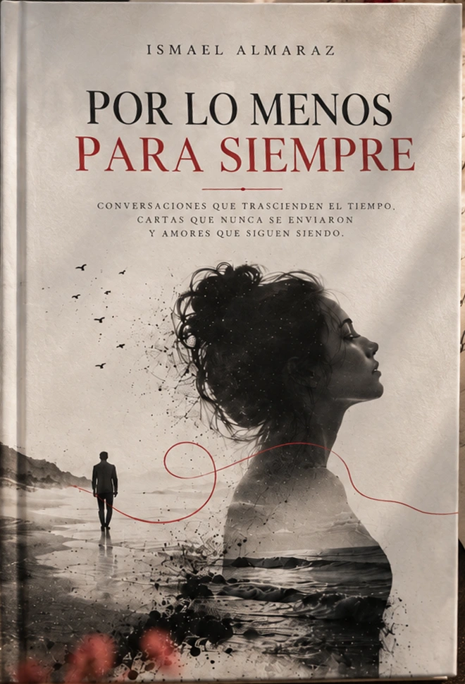
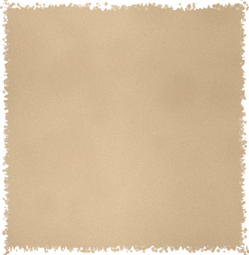
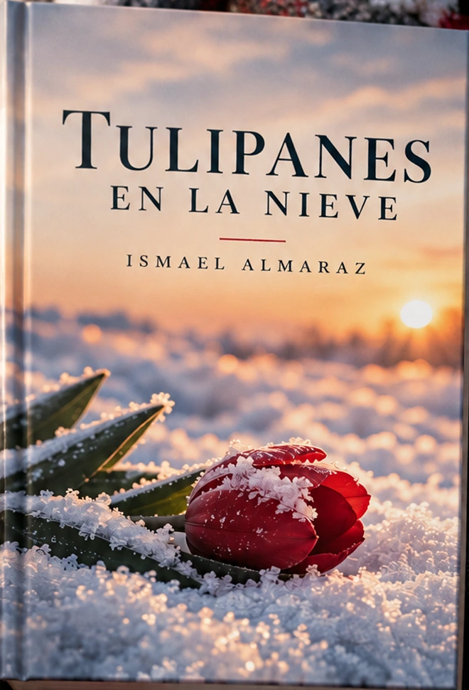
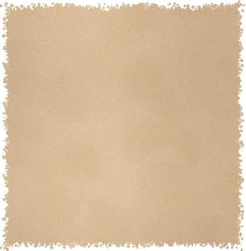
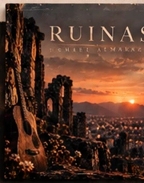
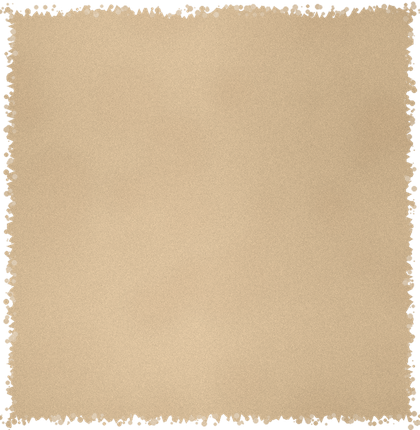

A veces el amor también se queda cuando se va.
Por lo menos para siempre
Conversaciones que trascienden el tiempo, cartas que nunca se enviaron y amores que siguen siendo.
EXPLORAR →
Un mismo camino.
Libros, canciones, poemas,
pensamientos y rarezas que nacen
de lo que la vida me ha enseñado.
TRES UNIVERSOS, UN MISMO LATIDO.


A veces el amor también se queda cuando se va.
Conversaciones que trascienden el tiempo, cartas que nunca se enviaron y amores que siguen siendo.
EXPLORAR →

Hay historias que permanecen, incluso cuando ya no estamos.
Una historia sobre lo que duele, lo que sana y todo lo que permanece.


Once canciones sobre lo que perdemos y lo que permanece.
Once canciones, once historias que dejan huella.
ESCUCHAR →CANCIONES INÉDITAS, PENSAMIENTOS, POEMAS Y RAREZAS
“A veces las canciones llegan tarde,ISMAEL ALMARAZ
pero siempre llegan a las personas correctas.”
Recibe nuevas canciones, poemas y pensamientos directamente en tu correo.